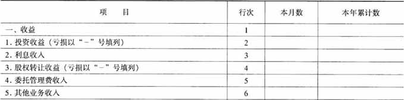
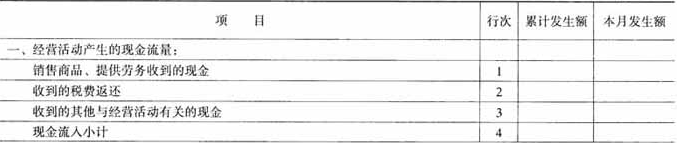
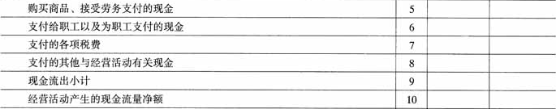
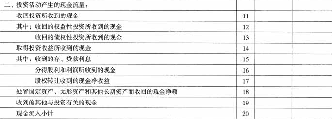
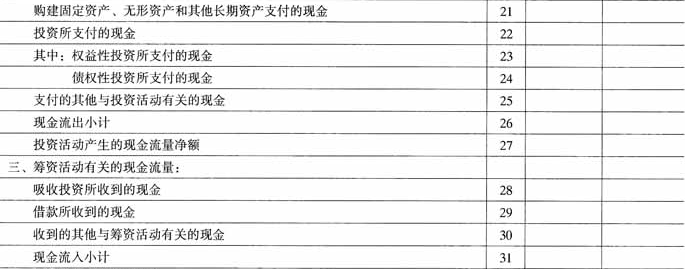
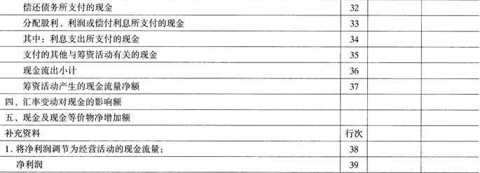
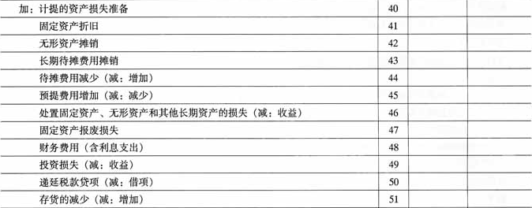
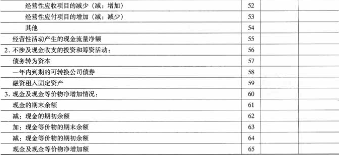

财政部
关于印发《投资公司会计核算办法》的通知
财会〔2004〕14号
各省、自治区、直辖市、计划单列市财政厅（局）,新疆生产建设兵团财务局,国资委,国家发展改革委,有关中央管理企业：
为了规范投资公司的会计核算，提高投资公司会计信息质量，根据《中华人民共和国会计法》、《企业财务会计报告条例》、《企业会计制度》以及国家有关法律、法规，结合投资公司的实际情况，我部制定了《投资公司会计核算办法》，现予印发。于2005年1月1日起在已执行《企业会计制度》的各投资公司执行。执行中有何问题，请及时反馈我部。
附件：投资公司会计核算办法
财政部
2004年10月25日
附件：
投资公司会计核算办法
一、总说明
（一）为了统一规范投资公司的会计核算，根据《中华人民共和国会计法》、《企业财务会计报告条例》、《企业会计制度》和国家有关法律、法规，并结合投资公司的经营特点和实际情况，特制定《投资公司会计核算办法》（以下简称“办法”）。
（二）中华人民共和国境内依法成立的专门从事长期股权投资或长期债权投资等活动的企业，即指没有取得金融业务许可证的非金融企业，在执行《企业会计制度》的同时，执行本办法。
二、补充会计科目使用说明
（一）会计科目的设置
1.本办法在《企业会计制度》的基础上增设了“短期委托贷款”、“待处置资产”、“长期委托贷款”、“定向投资”、“待转投资费用”、“股权转让收益”、“利息收入”、“委托管理收入”、“利息支出”科目。将“主营业务税金及附加”科目改为“营业税金及附加”科目。
2.投资公司的业务收益主要包括投资收益、利息收入、股权转让收益、委托管理收入、其他业务收入；业务支出主要包括利息支出、其他业务支出、营业费用、管理费用和财务费用。
3.投资公司的营业费用主要包括差旅费、业务宣传费、审计费、咨询费、租赁及物业管理费等；管理费用主要包括管理人员工资和福利费、业务招待费、社会保障费用、计提的有关减值准备、交通费、培训费、会议费等。投资公司财务费用只反映结算、融资等发生的汇兑损益和各项手续费支出以及投资公司银行存款取得的利息收入等，不包括投资公司委托金融机构向其他单位贷款所取得的利息收入和向银行等金融机构借款所发生的利息支出。
（二）补充会计科目的使用说明
1103 短期委托贷款
一、本科目核算投资公司按照有关规定委托金融机构向其他单位贷出的期限在1年（含1年）以下的款项。
二、本科目应当设置以下明细科目：
（一）应计贷款本金；
（二）非应计贷款本金；
（三）减值准备。
三、投资公司委托金融机构进行短期贷款，将贷款划入金融机构时，按贷款金额，借记本科目（应计贷款本金），贷记“银行存款”科目。
期末，按照规定的利率计提委托贷款利息，借记“应收利息”科目，贷记“利息收入”科目。
收回委托贷款，借记“银行存款”科目，贷记本科目（应计贷款本金）。
四、当贷款本金或利息逾期90天没有收回时，按其本金，借记本科目（非应计贷款本金）科目，贷记本科目（应计贷款本金）科目；当应计贷款转为非应计贷款时，应将已入账的利息收入和应收利息予以冲销，借记“利息收入”科目，贷记“应收利息”科目，并设置非应计贷款应收利息备查登记簿，登记已转入非应计贷款应收但未收取的利息。
短期委托贷款从应计贷款转为非应计贷款后，在收到该笔贷款的还款时，首先应冲减本金，借记“银行存款”科目，贷记本科目（非应计贷款本金）；贷款本金全部收回后，再收到的还款则确认为当期利息收入，借记“银行存款”科目，贷记“利息收入”科目。
当应计贷款转为非应计贷款后，如果客户能够及时偿还以往所欠的本息，并有证据表明以后能够按期及时足额偿还该笔贷款的本息，则应将该笔贷款从非应计贷款转回应计贷款。转回时，借记本科目（应计贷款本金），贷记本科目（非应计贷款本金）。在收到原从非应计贷款转为应计贷款的还款时，应先确认原冲回的利息收入，借记“银行存款”等科目，贷记“利息收入”科目。非应计贷款转回应计贷款后，应当按照有关规定按期计提应收利息。
五、期末，投资公司应按规定对短期委托贷款本金进行减值测试，如果表明预计可收回金额低于其本金的，计提减值准备。计提减值准备时，借记“管理费用”科目，贷记本科目（减值准备）。
六、本科目期末借方余额，反映投资公司委托金融机构贷出的短期贷款本金的账面价值。
1212 待处置资产
一、本科目核算投资公司已接受的债务人作为抵债并计划进行处置的资产价值。
投资公司应按照《企业会计制度》的规定确定取得的各项待处置资产的入账价值。
二、本科目应设置以下明细科目：
（一）待处置流动资产；
（二）待处置固定资产；
（三）待处置股权投资；
（四）待处置无形资产；
（五）减值准备。
三、投资公司从债务单位取得各项抵债资产时，按照应收债权的账面价值，加上应支付的相关税费，借记本科目，按应收债权已计提的减值准备，借记“短期委托贷款——减值准备”、“长期委托贷款——减值准备”等科目，按应收债权的账面余额，贷记“短期委托贷款——非应计贷款本金”、“长期委托贷款——非应计贷款本金”等科目，按应支付的相关税费，贷记“银行存款”、“应交税金”等科目。
四、投资公司对待处置资产不进行摊销或计提折旧；对于取得的待处置的长期股权投资应采用成本法核算，公司按被投资单位宣告发放的现金股利或利润中属于应当由本公司享有的部分，借记“应收股利”科目，贷记本科目（待处置股权投资）。
公司取得待处置资产后如转为自用，则应在相关手续办妥时，借记“固定资产”、“无形资产”等科目，贷记本科目。
五、期末，投资公司应对待处置资产按账面价值与可收回金额孰低计价，按待处置资产的账面价值与可收回金额孰低确定的应计提减值准备金额，借记“管理费用”科目，贷记本科目（减值准备）。
六、本科目期末借方余额，反映投资公司尚未处置的各项资产的账面价值。
1403 长期委托贷款
一、本科目核算投资公司按照有关规定委托金融机构向其他单位贷出的期限在1年（不含1年）以上的款项。
二、本科目应设置以下明细科目：
（一）应计贷款本金；
（二）非应计贷款本金；
（三）减值准备。
三、投资公司委托金融机构进行长期贷款，将贷款划入金融机构时，按贷款金额，借记本科目，贷记“银行存款”科目。
期末，按照规定的利率计提委托贷款利息，借记“应收利息”科目，贷记“利息收入”科目。
收回委托贷款，借记“银行存款”科目，贷记本科目。
四、当贷款本金或利息逾期90天没有收回时，借记本科目（非应计贷款本金）科目，贷记本科目（应计贷款本金）科目；当应计贷款转为非应计贷款时，应将已入账的利息收入和应收利息予以冲销，借记“利息收入”科目，贷记“应收利息”科目，并设置非应计贷款应收利息备查登记簿，登记已转入非应计贷款应收但未收取的利息。
长期委托贷款从应计贷款转为非应计贷款后，在收到该笔贷款的还款时，首先应冲减本金，借记“银行存款”科目，贷记本科目（非应计贷款本金）；贷款本金全部收回后，再收到的还款则确认为当期利息收入，借记“银行存款”科目，贷记“利息收入”科目。
当应计贷款转为非应计贷款后，如果客户能够及时偿还以往所欠的本息，并有证据表明以后能够按期及时足额偿还该笔贷款的本息，则应将该笔贷款从非应计贷款转回应计贷款。转回时，借记本科目（应计贷款本金），贷记本科目（非应计贷款本金）。在收到已从非应计贷款转为应计贷款的还款时，应先确认原冲回的利息收入，借记“银行存款”等科目，贷记“利息收入”科目。非应计贷款转回应计贷款后，应当按照有关规定按期计提应收利息。
五、期末，投资公司应按规定对长期委托贷款计提减值准备。计提减值准备时，借记“管理费用”科目，贷记本科目（减值准备）。
六、本科目期末借方余额，反映投资公司委托金融机构贷出的长期贷款本金的账面价值。
1903 定向投资
一、本科目核算投资公司按照有关部门规定进行的定向投资，或有关部门无偿划拨给投资公司的投资项目。
二、本科目应设置以下明细科目：
（一）股权投资；
（二）债权投资；
（三）其他投资。
三、投资公司收到定向投资资金时，借记“银行存款”科目，贷记“实收资本”、“资本公积”等科目；在进行定向投资时，按照投资成本，借记本科目（股权投资、债权投资、其他投资），贷记“银行存款”等科目。
投资公司取得无偿划入的投资项目时，按照划出单位的账面价值，借记本科目（股权投资、债权投资、其他投资），贷记“实收资本”、“资本公积”等科目。
四、投资公司对“定向投资——股权投资”采用成本法进行核算，公司按被投资单位宣告发放的现金股利或利润中属于应当由本公司享有的部分，借记“应收股利”科目，贷记“投资收益”科目或本科目。实际收到现金股利或利润，借记“银行存款”科目，贷记“应收股利”科目。
投资公司对“定向投资——债权投资”应按期计提利息。
五、本科目应按照股权投资、债权投资、其他投资项目设置明细账，进行明细核算。
六、本科目期末借方余额，反映投资公司按规定进行的定向投资及无偿划入的各投资项目的账面价值。
1904 待转投资费用
一、本科目核算投资公司按照股权投资协议进行投资而发生的与股权投资项目有关的各项前期费用等。
二、投资公司发生的与股权投资项目有关的前期费用，借记本科目，贷记“银行存款”等科目。待股权投资项目按协议规定投资时，借记“长期股权投资”科目，贷记本科目。
三、因终止协议等原因而不再进行股权投资的，应将该股权投资项目上所发生的前期费用作为期间费用入账，借记“管理费用”科目，贷记本科目。
四、本科目应按投资项目设置明细账。
五、本科目期末借方余额，反映投资公司尚未结转的因股权投资而发生的前期费用。
5103 股权转让收益
一、本科目核算投资公司股权转让所实现的净收益。
二、投资公司股权转让时，按实际取得的价款，借记“银行存款”等科目，按已计提的减值准备，借记“长期投资减值准备”、“定向投资——减值准备”等科目，按股权投资的账面余额，贷记“长期股权投资”、“定向投资——股权投资”等科目，按尚未领取的现金股利或利润，贷记“应收股利”科目，按其差额，贷记或借记本科目。
投资公司在股权转让的过程中发生的相关费用，借记本科目，贷记“现金”、“银行存款”、“应交税金”等科目。
三、本科目应按转让股权项目设置明细账，进行明细核算。
四、期末，应将本科目的余额转入“本年利润”科目，结转后本科目应无余额。
5204 利息收入
一、本科目核算投资公司委托金融机构向其他单位贷出款项所取得的利息收入。投资公司银行存款取得的利息收入在“财务费用”科目核算，不在本科目核算。
二、期末，按规定的利率计收委托贷款利息时，借记“应收利息”科目，贷记本科目。实际收到委托贷款利息时，借记“银行存款”科目，贷记“应收利息”科目。
三、当贷款本金或利息逾期90天没有收回时，借记“短期委托贷款——非应计贷款本金”科目，贷记“短期委托贷款——应计贷款本金”科目，或借记“长期委托贷款——非应计贷款本金”科目，贷记“长期委托贷款——应计贷款本金”科目。当应计贷款转为非应计贷款时，应将已入账的利息收入和应收利息予以冲销，转作表外核算。借记本科目，贷记“应收利息”科目。同时，在备查簿作备查登记。
四、本科目按贷款的种类设置明细账，进行明细核算。
五、期末，应将本科目的余额转入“本年利润”科目，结转后本科目应无余额。
5205 委托管理收入
一、本科目核算投资公司接受集团母公司或其他单位的委托，管理其投资项目或提供其他服务而取得的收入。
二、投资公司取得集团母公司或其他单位支付的委托管理费时，借记“银行存款”科目，贷记本科目。
三、本科目应按委托单位设置明细账，进行明细核算。
四、期末，应将本科目的余额转入“本年利润”科目，结转后本科目应无余额。
5403 利息支出
一、本科目核算投资公司向银行等金融机构借款所发生应计入当期损益的利息支出。
二、公司计提或发生利息支出，借记本科目，贷记“预提费用”、“银行存款”、“长期借款”等科目。
三、本科目应按利息支出的种类设置明细账。
四、期末，应将本科目的余额转入“本年利润”科目，结转后本科目应无余额。
三、补充报表格式及编制说明
（一）投资公司应根据国家有关主管部门和其他相关会计信息使用者对会计信息的要求，按期提供财务会计报告及有关数据、资料。
（二）本办法对《企业会计制度》中资产负债表、利润表、现金流量表调整了部分报表项目及编制说明。
1.关于资产负债表（会企01表）项目补充和调整：
（1）在“短期投资”项目下增加“其中：短期委托贷款”项目，反映投资公司短期委托贷款的账面价值。
（2）在流动资产项目内单列“待处置资产”项目，反映投资公司各项待处置资产的账面价值。
（3）在“长期债权投资”项目下增加“其中：长期委托贷款”项目，反映投资公司长期委托贷款的账面价值。
（4）在“长期投资合计”项目上增加“定向投资”项目，反映投资公司定向投资的账面价值，但“长期股权投资”和“长期债权投资”项目不包括“定向投资”项目。
（5）在“其他长期资产”项目下增加“其中：待转投资费用”项目，反映与投资项目有关的前期投资费用。
2.利润表（会企02表）格式如下：
利润表
|
|
| 编制单位： | ＿＿＿＿年＿＿月 | 会企02表
单位：元 |
|

|
3.现金流量表格式如下：
现金流量表
|
|
| 单位名称： | ＿＿＿＿年＿＿月 | 国投会03表
单位：元 |
|







|
四、利润表编制说明
（一）本表反映投资公司在一定期间内利润（或亏损）的实际情况。
（二）本表“本月数”栏反映各项目的本月实际发生数；在编报年度财务会计报告时，“本月数”栏改为“上年数”，填列上年全年累计实际发生数。如果上年度利润表与本年度利润表的项目名称和内容不相一致，应对上年度利润表项目的名称和数字按本年度的规定进行调整，填入本表“上年数”栏。
本表“本年累计数”栏反映各项目自年初起至报告期末止的累计实际发生数。
（三）本表各项目的内容及其填列方法：
1.“收益”项目，反映投资公司取得的收益总额。本项目根据“投资收益”、“利息收入”、“股权转让收益”、“委托管理收入”、“其他业务收入”等项目的数额汇总计算填列。
2.“投资收益”项目，反映投资公司从投资项目取得的收益或发生的损失，不包括转让投资项目的股权所取得的净收益和委托金融机构向其他单位贷出款项所取得的利息收入。本科目应根据“投资收益”科目的发生额分析填列；如为投资损失，以“-”号填列。
3.“利息收入”项目，反映投资公司委托金融机构向其他单位贷出款项所取得的利息收入。本项目应根据“利息收入”科目的发生额分析填列。
4.“股权转让收益”项目，反映投资公司转让投资项目的股权所实现的净收益。本项目应根据“股权转让收益”科目的发生额分析填列。
5.“委托管理收入”项目，反映外商投资公司接受国外集团公司的委托，管理其在中国境内的投资项目而取得的国外集团公司支付的管理费收入。本项目应根据“委托管理费收入”科目的发生额分析填列。
6.“其他业务收入”项目，反映投资公司从事除投资业务以外的其他业务取得的各项收入。本项目应根据“其他业务收入”科目的发生额分析填列。
7.“费用”项目，反映投资公司发生的各项费用总额。本项目根据“利息支出”、“营业费用”、“管理费用”、“财务费用”、“其他业务支出”、“营业税金及附加”等项目的数额汇总计算填列。
8.“营业费用”项目，反映投资公司发生的营业费用。本项目应根据“营业费用”科目发生额分析填列。
9.“管理费用”项目，反映投资公司发生的管理费用。本项目应根据“管理费用”科目的发生额分析填列。
10.“财务费用”项目，反映投资公司发生的财务费用。本项目应根据“财务费用”科目的发生额分析填列。
11.“利息支出”项目，反映投资公司对各项借款按规定的适用利率发生的各项利息支出。本项目应根据“利息支出”科目的发生额分析填列。
12.“其他业务支出”项目，反映投资公司从事除投资业务以外的其他业务发生的各项支出。本项目应根据“其他业务支出”科目的发生额分析填列。
13.“营业税金及附加”项目，反映投资公司日常活动应负担的营业税、城市维护建设税、土地增值税和教育费附加等。本项目应根据“营业税金及附加”科目的发生额分析填列。
14.“补贴收入”项目，反映投资公司取得的各种补贴收入以及退回的增值税等。本项目应根据“补贴收入”科目的发生额分析填列。
15.“营业外收入”项目和“营业外支出”项目，反映投资公司发生的与其经营无直接关系的各项收入和支出。这两个项目应分别根据“营业外收入”科目和“营业外支出”科目的发生额分析填列。
16.“利润总额”项目，反映投资公司实现的利润总额。如为亏损总额，以“-”号填列。
17.“所得税”项目，反映投资公司按规定从本期损益中扣除的所得税。本项目应根据“所得税”科目的发生额分析填列。
18.“净利润”项目，反映投资公司实现的净利润。如为净亏损，以“-”号填列。
五、现金流量表编制说明
（一）本表反映公司一定会计期间内有关现金和现金等价物的流入和流出的信息。
（二）现金流量表应按照经营活动产生的现金流量、投资活动产生的现金流量和筹资活动产生的现金流量分别反映。本说明所指的现金流量，是指现金的流入和流出。
（三）本表主要变动项目的内容及填列方法如下：
1.投资活动产生的现金流量项目
（1）收回投资所收到的现金，反映以下两方面内容：
①收回的权益性投资收到的现金
本项目反映公司出售、转让或到期收回的短期投资、长期股权投资而收到的现金。收回的非现金资产，不涉及现金流量的变动，在现金流量表补充资料中“不涉及现金收支的投资与筹资活动”项目中反映。
②收回的债权性投资收到的现金
本项目反映公司当期收回的各项债权投资本金，包括各类短期贷款和中长期贷款等。
（2）取得投资收益所收到的现金，反映以下三方面的内容：
①收到的存、贷款利息
本项目反映公司实际收到的各项定期存、贷款利息，包括本期收到的存、贷款利息和本期收到的前期应收贷款利息。
②分得股利和利润所收到的现金
本项目反映公司因股权性投资而实际收到的现金股利，包括从子公司、联营企业和合营企业分回利润收到的现金。当期实际收到合作投资收益也在本项目反映。
③股权转让收到的现金净收益
本项目反映公司因转让股权收到的现金收益。
（3）处置固定资产、无形资产和其他长期资产而收到的现金净额
本项目反映公司处置固定资产、无形资产、待处置资产和其他长期资产所取得的现金，扣除为处置这些资产而支付的有关费用后的净额。本项目还包括固定资产报废、毁损的变卖收益以及遭受灾害而收到的保险赔偿收入等。
如处置的固定资产、无形资产和其他长期资产所收回的现金净额为负数，则应作为投资活动现金流出项目反映，列在“支付的其他与投资活动有关的现金”中。
（4）收到的其他与投资有关的现金
本项目反映除上述各项投资活动以外，公司发生的与投资活动有关的其他现金流入。其他现金流入如金额较大，应做出说明。
（5）购建固定资产、无形资产和其他长期资产所支付的现金
本项目反映公司为购建固定资产，取得无形资产和其他长期资产而支付的现金。融资租入固定资产支付的租金在筹资活动产生的现金流量中单独反映。
（6）投资所支付的现金，反映以下两方面内容：
①权益性投资所支付的现金
本项目反映公司进行权益性投资实际支付的现金，包括短期投资、长期股权投资。企业以非现金的固定资产等进行的权益性投资在现金流量表的附注中单独反映，不包括在本项目内。
②债权性投资所支付的现金
本项目反映公司当期发放的委托贷款等本金和各种债券。
（7）支付的其他与投资活动有关的现金
本项目反映除上述各项投资活动以外，公司发生的与投资活动有关的其他现金流出。其他现金流出如金额较大，应做出说明。
2.筹资活动有关的现金流量项目
（1）吸收投资所收到的现金
本项目反映公司增加资本所收到的现金。
（2）借款收到的现金
本项目反映公司向银行或金融机构等借入的各种短期、长期借款所收到的现金。
（3）收到的其他与筹资活动有关的现金
本项目反映公司除上述各项筹资活动外，发生的其他与筹资活动有关的现金流入。如其他现金流入金额较大，应做出说明。
（4）偿还债务所支付的现金
本项目反映公司偿还债务本金所支付的现金。包括：归还金融企业借款、偿付公司到期债券等。
（5）分配股利、利润或偿付利息所支付的现金
本项目反映公司实际支付的现金股利、利润以及利息支出，其中利息支出作为其中项单独反映。
（6）支付的其他与筹资活动有关的现金
本项目反映公司除上述各项筹资活动以外，发生的与筹资活动有关的其他现金流出。如其他现金流出金额较大，应做出说明。